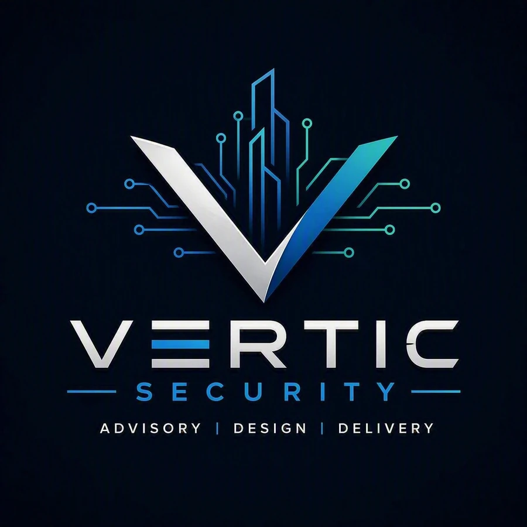

Security built for critical environments.
Vertic Security combines independent advisory, engineered physical security design and technology delivery for data centres, critical infrastructure, government and demanding enterprise environments.

One security outcome. Four connected disciplines.
Strategy, engineering, delivery and assurance are treated as a connected system rather than isolated workstreams.
Define the risk
Security strategies, risk assessments, governance, master planning and investment priorities.
Decision supportEngineer the solution
Coordinated access control, video, intrusion, intercom, perimeter and supporting infrastructure design.
Buildable outcomesIntegrate the technology
Procurement support, installation management, configuration, integration, testing and handover.
Operational readinessVerify performance
Independent reviews, compliance checks, commissioning support and acceptance assurance.
Confidence at handoverSecurity is infrastructure, not an add-on.
Successful delivery depends on the alignment of architecture, door hardware, communications pathways, power, networks, devices, platforms, operating procedures and responder information.
- Electronic access control and alarm systems
- Video surveillance and analytics
- Intrusion detection and intercom
- Security operations centres and monitoring
- Perimeter, gates, barriers and supporting infrastructure
- Programming, integration, testing and commissioning
CONTROL
SYSTEMS
& INTERCOM
& POWER
From first risk conversation to operational handover.
Discover
Understand the environment, assets, threats, stakeholders and constraints.
Define
Set requirements, risk treatments, scope, standards and success criteria.
Design
Develop coordinated drawings, specifications, schedules and interfaces.
Deliver
Support procurement, installation, integration, programming and controls.
Assure
Test, commission, close defects, verify documentation and support acceptance.
Designed for high-consequence environments.
Data centres
High-availability sites requiring precise coordination and controlled commissioning.
Critical infrastructure
Essential services, operational assets and resilience-driven investment.
Government
Protective security and secure-facility programs with defined compliance pathways.
Enterprise
Campuses, portfolios, upgrades and major developments requiring scalable standards.